Efficient model-based reinforcement learning for robot control via online optimization
한줄 요약 — 모델 예측 자체가 아니라 모델 Jacobian으로 실제 궤적 손실의 정책 기울기를 근사하고 trust-region식 전처리를 적용해 분포 이동 중에도 온라인 학습을 안정화했으며, 대형 굴착기에서 180 episode·약 2.5시간의 실데이터로 고속 궤적을 평균 4.5 cm 오차로 추종했다.
1.연구 배경 및 동기
시뮬레이터 없이 실기에서 배우는 연속 제어
대형 굴착기 같은 유압 시스템은 마찰, 밸브 dead-zone, 부착물과 페이로드 변화가 커서 정확한 해석 모델을 만들기 어렵다. 강화학습은 이런 비선형성을 데이터에서 흡수할 수 있지만 model-free 방법은 수천~수만 시간의 상호작용을 요구하고, 실기 탐색 중 위험한 명령을 낼 수 있다. 고정 시뮬레이터에서 학습한 정책도 sim-to-real 오차와 장비 상태 변화에 취약하다.
Model-based RL은 학습한 동역학으로 가상 rollout을 만들어 데이터 효율을 높이지만, 모델 오차가 긴 horizon에서 누적되면 정책이 실제 시스템이 아니라 모델의 허점을 최적화한다. 특히 온라인 환경에서는 매 episode 데이터 분포가 정책과 함께 변하므로, 모델이 이전 구간에 잘 맞아도 새 궤적에서 Jacobian과 기울기 방향을 틀리게 예측할 수 있다.
논문은 미래 상태를 길게 상상해 보상값을 학습하는 대신, 방금 실제로 수행한 궤적의 tracking loss를 출발점으로 삼는다. 학습 모델은 그 실제 trajectory 주변에서 정책 파라미터가 바뀌었을 때 손실이 어떻게 변할지 미분하는 도구로만 사용한다. 이 관점은 짧은 실데이터를 최대한 재활용하면서 모델 bias의 영향을 정책 업데이트 크기로 제한한다.
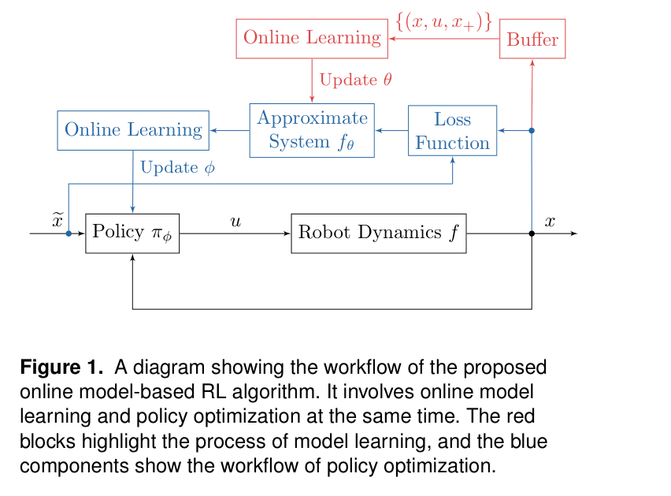
원문 Figure 1 · PDF p.4 — Figure 1. A diagram showing the workflow of the proposed online model-based RL algorithm. It involves online model learning and policy optimization at the same time. The red blocks highlight the process of model learning, and the blue components show the workflow of policy optimization.
선행 연구의 한계
Model-free PPO류는 실물 굴착기에서 허용하기 어려운 매우 큰 상호작용 예산이 필요하다.
고정된 모델이나 sim-to-real 정책은 payload, 마찰, 유압 상태 변화에 온라인 적응하지 못한다.
긴 model rollout을 직접 최적화하면 작은 one-step 오차가 누적되고 정책이 모델 오류를 악용할 수 있다.
온라인 SGD는 정책 변화로 입력 분포가 이동할 때 episode 간 손실이 갑자기 커지는 불안정성이 있다.
이 연구의 기여
실제 episode loss와 학습 동역학의 Jacobian을 결합한 온라인 model-based policy gradient 알고리즘을 제시한다.
예측 기울기 오차가 제곱합 가능할 때 sublinear regret를 얻는 조건을 분석하고 분포 이동과 모델 정확도의 역할을 연결한다.
12.5 t HEAP 굴착기에서 시뮬레이터·사전학습 없이 약 3시간 안에 궤적 추종 정책을 학습한다.
payload 급변, soft robot arm, frozen-model·저주기 model update ablation으로 온라인 적응과 일반성을 확인한다.
2.방법론 및 시스템 구성
각 episode에서 현재 정책으로 실제 시스템을 실행하고 상태·행동·reference를 buffer에 저장한다. 신경망 동역학은 이 데이터의 one-step 다음 속도 MSE로 온라인 갱신된다.
정책 업데이트 때는 실제로 관측한 trajectory에서 tracking loss를 계산하되, 정책 변화에 대한 상태 전파 미분은 학습 모델의 Jacobian으로 얻는다. 기울기를 curvature/preconditioner로 정규화하고 trust-region 반경 안에서 한 번 갱신해 과도한 model exploitation을 막는다.
처리 파이프라인
1
실제 episode 수집
현재 정책으로 무작위 polynomial reference를 추종한다. HEAP에서는 한 episode가 5초 궤적 10개로 구성되며, 현재 관절 위치·속도, 앞으로의 reference, 이전 valve command를 입력하고 새 valve current를 출력한다.
2
온라인 동역학 학습
buffer의 실제 전이로 다음 관절 속도를 예측하는 2개 hidden-layer 신경망을 one-step MSE로 최적화한다. 매 episode 새 분포를 반영하므로 payload나 마찰 변화 뒤 모델이 계속 수정된다.
3
실제 손실의 모델 보조 미분
실제 수행 궤적의 tracking loss를 기준으로 삼고, action과 다음 state의 국소 민감도만 학습 모델에서 backpropagation한다. 따라서 손실값 자체를 허구의 긴 rollout에 의존하지 않는다.
4
전처리된 제한 업데이트
기울기를 Jacobian에서 얻은 preconditioner로 스케일링하고 반경 epsilon의 제한 안에서 정책 파라미터를 갱신한다. 같은 loop를 다음 실제 episode에서 반복해 model과 policy를 공동 적응시킨다.
온라인 정책이 기대 손실 최적 정책 φ*와 비교해 episode 동안 누적한 성능 차이를 정의한다.
3.핵심 기술
실제 궤적 중심의 analytical policy gradient
알고리즘은 실제 trajectory에서 발생한 tracking error를 그대로 사용한다. 모델은 그 trajectory의 국소 동역학 미분을 제공해 정책 파라미터가 조금 바뀔 때 다음 상태가 어떻게 달라질지 계산한다. 이는 model-free gradient보다 표본 효율적이면서 장기 hallucinated rollout 의존을 낮춘다.
핵심 요구는 모든 상태를 완벽하게 예측하는 것이 아니라 방문 분포에서 정책 기울기 방향을 충분히 맞추는 것이다. 이 때문에 one-step 모델의 평균 오차만 보는 대신 기울기 예측 오차가 regret bound에 직접 들어간다.
loss 값은 실측 trajectory에서 계산
동역학 모델은 국소 Jacobian 제공
장기 rollout model bias 억제
온라인 regret와 분포 이동 분석
이론은 model-derived gradient와 true gradient의 차이가 시간에 따라 충분히 감소하면 누적 regret가 sublinear해짐을 보인다. 즉 평균 episode 성능이 최적 고정 정책에 접근하려면 모델의 단순 예측 정확도보다 gradient alignment가 중요하다.
정책이 바뀌면서 데이터 분포가 이동하면 연속 episode의 gradient가 갑자기 달라질 수 있다. 부록 분석과 실험은 온라인 SGD가 같은 mini-batch를 반복 사용할 때 생기는 상관과 update 주기 효과를 드러내며, 지속적인 real-data refresh의 필요성을 설명한다.
제곱합 gradient prediction error 조건
sublinear regret 보장
episode-wise distribution shift를 명시적으로 분석
trust-region 전처리와 지속 적응
모델 Jacobian은 관절과 명령 축마다 크기가 달라 raw gradient를 그대로 쓰면 특정 축이 update를 지배한다. 전처리 행렬로 민감도를 균형화하고 제한 반경으로 한 episode의 변화량을 억제한다.
모델과 정책을 매 episode 갱신하기 때문에 episode 157의 payload 교체처럼 시스템이 갑자기 바뀌어도 새 전이로 두 구성요소가 함께 적응한다. frozen model 또는 16 episode마다 갱신한 ablation에서 성능이 악화된 결과가 이 설계의 필요성을 지지한다.
축별 민감도 전처리
과도한 정책 이동 제한
payload 변화 뒤 model-policy 공동 재적응
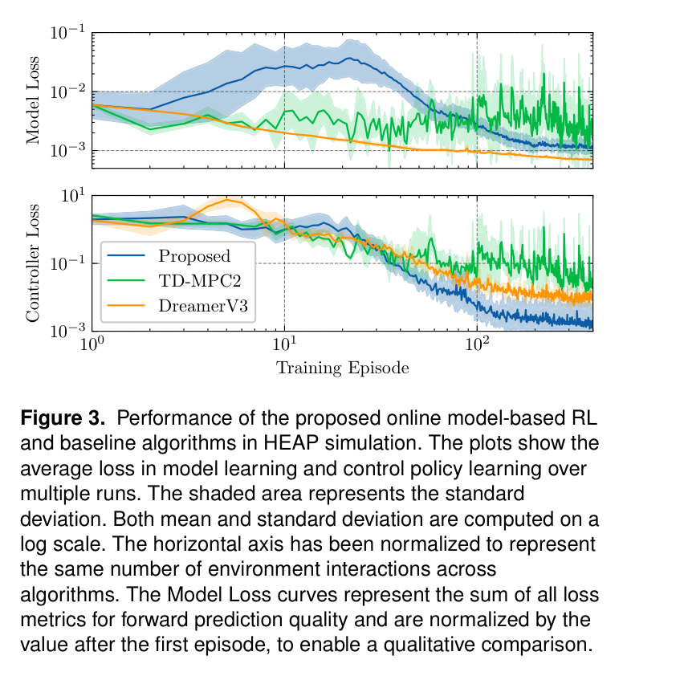
원문 Figure 3 · PDF p.9 — Figure 3. Performance of the proposed online model-based RL and baseline algorithms in HEAP simulation. The plots show the average loss in model learning and control policy learning over multiple runs. The shaded area represents the standard deviation. Both mean and standard deviation are computed on a log scale. The horizontal axis has been normalized to represent the same number of environment interactions across algorithms. The Model Loss curves represent the sum of all loss metrics for forward prediction quality and are normalized by the value after the first episode, to enable a qualitative comparison.
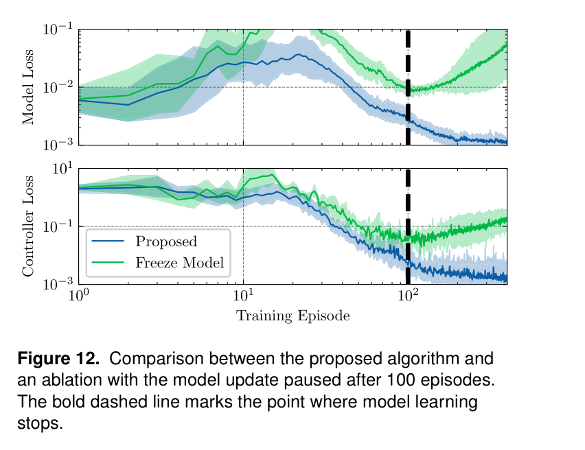
원문 Figure 12 · PDF p.13 — Figure 12. Comparison between the proposed algorithm and an ablation with the model update paused after 100 episodes. The bold dashed line marks the point where model learning stops.
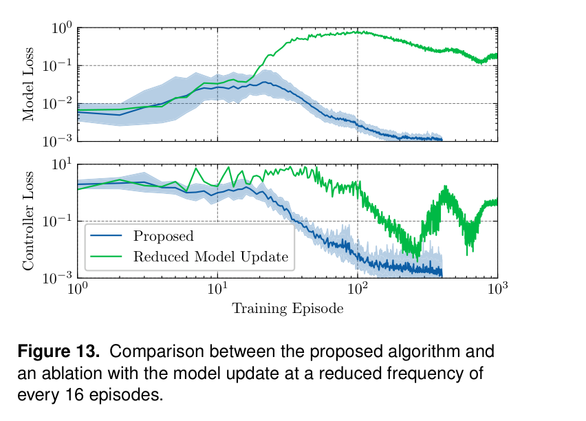
원문 Figure 13 · PDF p.13 — Figure 13. Comparison between the proposed algorithm and an ablation with the model update at a reduced frequency of every 16 episodes.
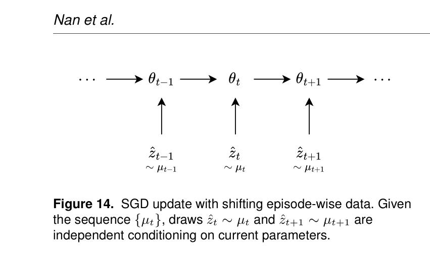
원문 Figure 14 · PDF p.17 — Figure 14. SGD update with shifting episode-wise data. Given the sequence {µt}, draws ˆzt ∼µt and ˆzt+1 ∼µt+1 are independent conditioning on current parameters.
4.실험 결과
실험 환경·장비·데이터
주 플랫폼은 약 12.5 t HEAP 자율 굴착기다. 정책은 현재 관절 위치·속도, look-ahead reference, 이전 command를 받아 valve current를 내고, 모델은 현재 상태와 행동에서 다음 관절 속도를 예측한다. reference는 5초 polynomial curve이며 한 episode에 10개가 포함된다.
비교 실험은 시뮬레이션과 실기 HEAP에서 수행하고, 별도 플랫폼으로 cable-driven soft robot arm을 사용한다. 학습 계산기는 Intel i9-12900K와 NVIDIA RTX 4090이며 제어와 학습 pipeline을 온라인으로 실행한다.
실험 프로토콜
시뮬레이션에서는 10 episode burn-in 뒤 학습 곡선과 데이터 효율을 비교한다. 실기 HEAP은 180 episode, 실제 동작 데이터 약 2.5시간을 수집하며 계산을 포함한 전체 학습은 약 3시간이다. 무작위 spline reference로 성능을 평가한다.
학습 도중 episode 157에서 payload를 갑자기 바꾸고 회복 속도를 본다. soft arm은 30 episode로 별도 학습한다. frozen dynamics model과 16 episode 간격 모델 update를 두어 지속 갱신의 효과를 ablation한다.
비교 기준
TD-MPC2와 DreamerV3: 대표적인 latent/world-model 기반 강화학습과 동일 interaction budget에서 비교한다.
Frozen model 및 16-episode model update: 온라인 동역학 갱신 빈도의 ablation이다.
평가 지표
평균·최대 관절 trajectory tracking error와 normalized error ratio
평균·최대 reference velocity와 동일 속도 대비 정확도
episode 수, 실제 interaction 시간, 수렴 속도
payload 교체 뒤 오차 증가와 회복 episode 수
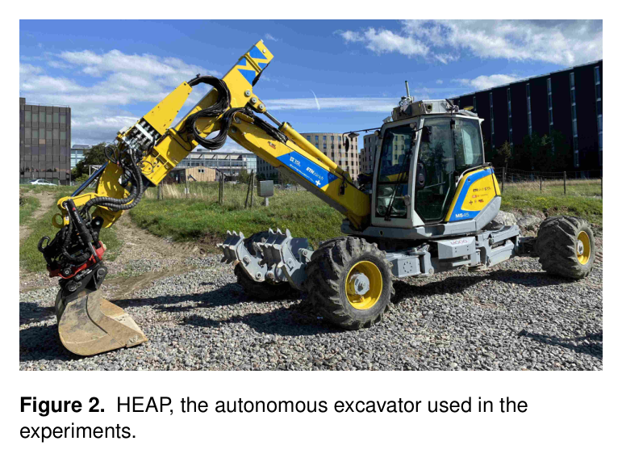
원문 Figure 2 · PDF p.9 — Figure 2. HEAP, the autonomous excavator used in the experiments.
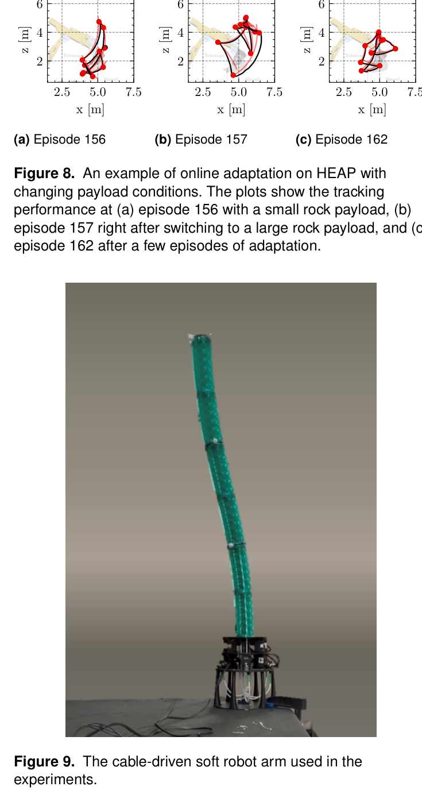
원문 Figure 9 · PDF p.12 — Figure 9. The cable-driven soft robot arm used in the experiments.
핵심 결과 해석
시뮬레이션에서 10 episode burn-in 이후 제안법의 loss는 초기에 약 t^-4에 가까운 속도로 감소하고 약 200 episode에서 바닥에 도달했다. TD-MPC2와 DreamerV3는 같은 데이터 예산에서 더 느리거나 높은 손실에 머물렀으며 PPO는 유사 제어 학습에 10,000시간 이상이 필요했다. 시뮬레이션 200 episode는 2.78시간 상호작용이며 평균 오차는 5.5 cm였다.
HEAP 실기에서 180 episode, 약 2.5시간의 실제 데이터로 평균 4.5 cm, 최대 12.4 cm 추종 오차를 얻었다. 평균 속도 52.3 cm/s, 최대 129.3 cm/s, normalized error ratio 0.09였다. Nubert & Hutter 제어기는 평균 8.56 cm·최대 16.2 cm·ratio 0.27, Egli & Hutter 제어기는 평균 2.8 cm·최대 6.7 cm·ratio 0.13으로 더 정확하지만 더 느렸다. 제안법은 속도를 높이면서 정규화 오차를 낮추는 절충을 보였다.
episode 157에서 payload를 교체하자 추종 오차가 약 두 배로 증가했지만 episode 162까지 5 episode 안에 이전 수준으로 회복했다. 이는 offline sim-to-real 정책과 달리 운전 중 변화에 적응할 수 있음을 보여준다. soft robot arm도 30 episode 뒤 평균 2.95 cm를 기록해 기존 2.8 cm 결과와 비슷한 수준을 짧은 온라인 학습으로 얻었다.
100 episode 뒤 모델을 고정하면 이후 정책 개선이 악화했고, 모델을 16 episode마다만 갱신하면 loss가 주기적으로 나빠졌다 회복되는 cycle이 나타났다. 즉 모델이 완전히 정확해질 때까지 기다리는 것이 아니라 현재 정책의 방문 분포를 매 episode 따라가야 안정적인 정책 gradient를 제공할 수 있다.
정량 결과
평가 항목
정량 결과
조건·맥락
원문 근거
HEAP 평균 추종 오차
4.5 cm
180 episode 실기 온라인 학습
PDF p.11
HEAP 최대 추종 오차
12.4 cm
제안 정책의 실기 평가
PDF p.11
HEAP 평균·최대 속도
52.3 cm/s, 129.3 cm/s
제안 정책 trajectory
PDF p.11
정규화 오차 비율
0.09
제안법; 비교군 0.27 및 0.13
PDF p.11
실제 데이터 예산
180 episode, 약 2.5 h
계산 포함 전체 약 3 h
PDF p.10
payload 변화 회복
5 episode
episode 157 교체 후 162까지 회복
PDF p.11
soft arm 평균 오차
2.95 cm
30 training episodes 후
PDF p.12
실패 사례와 경계조건
동역학 모델을 고정하면 정책이 새 방문 분포로 이동할수록 gradient 품질이 떨어져 성능이 악화된다.
모델을 16 episode 간격으로 갱신하면 update 직전·직후 손실이 주기적으로 변하는 불안정성이 나타난다.
payload 급변 직후에는 오차가 일시적으로 약 두 배가 되어 적응 기간 중 안전 제한이 필요하다.
실험은 부드러운 연속 trajectory tracking이라 충돌·암석 걸림 같은 불연속 접촉에서 같은 안정성을 보장하지 않는다.
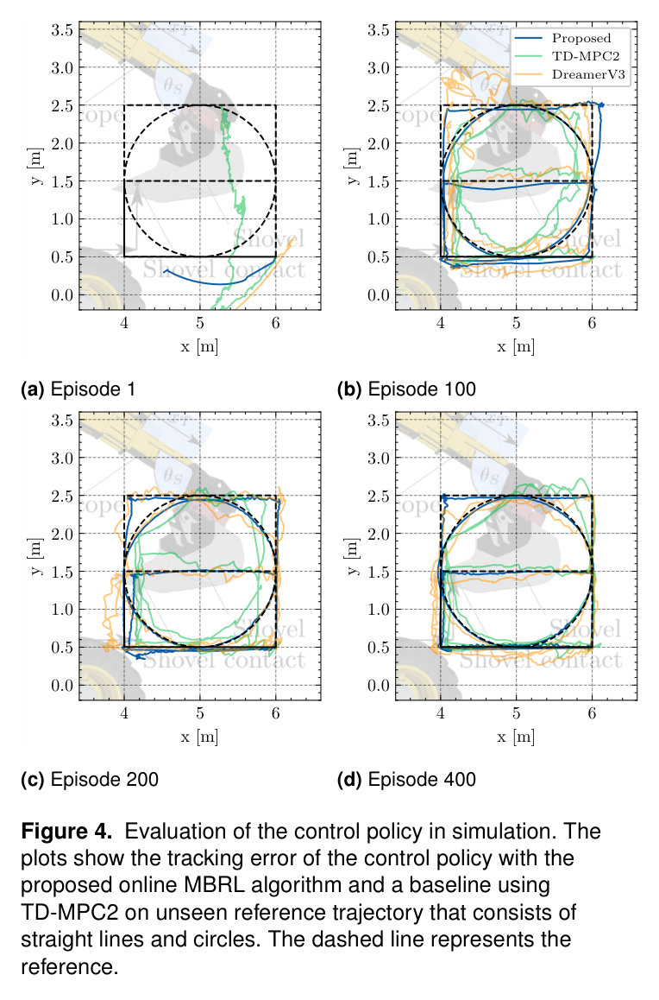
원문 Figure 4 · PDF p.10 — Figure 4. Evaluation of the control policy in simulation. The plots show the tracking error of the control policy with the proposed online MBRL algorithm and a baseline using TD-MPC2 on unseen reference trajectory that consists of straight lines and circles. The dashed line represents the reference.
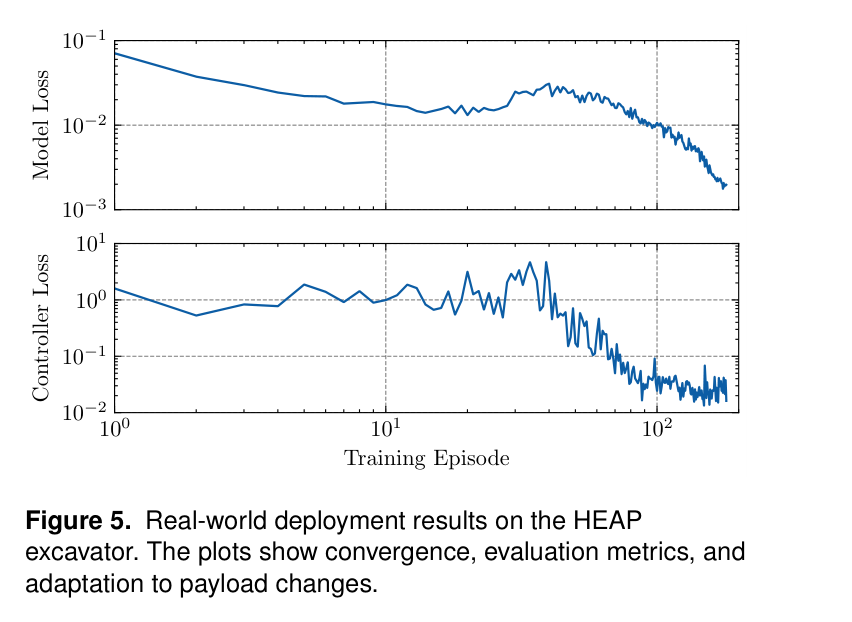
원문 Figure 5 · PDF p.10 — Figure 5. Real-world deployment results on the HEAP excavator. The plots show convergence, evaluation metrics, and adaptation to payload changes.
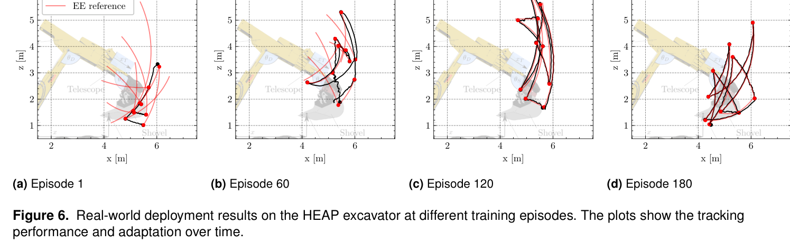
원문 Figure 6 · PDF p.11 — Figure 6. Real-world deployment results on the HEAP excavator at different training episodes. The plots show the tracking performance and adaptation over time.
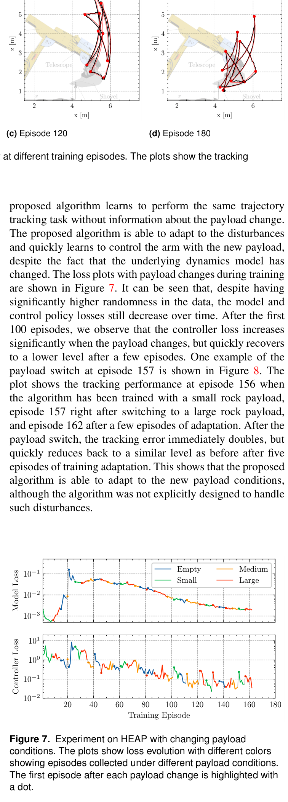
원문 Figure 7 · PDF p.11 — Figure 7. Experiment on HEAP with changing payload conditions. The plots show loss evolution with different colors showing episodes collected under different payload conditions. The first episode after each payload change is highlighted with a dot.
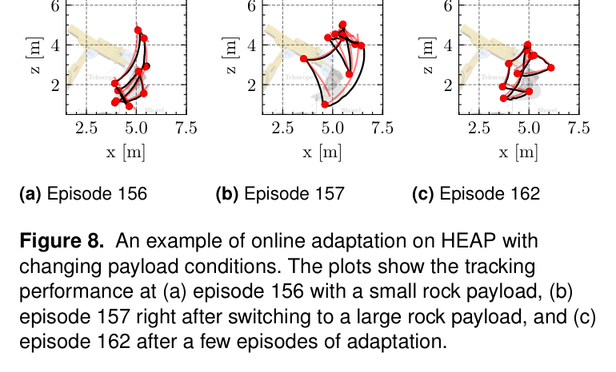
원문 Figure 8 · PDF p.12 — Figure 8. An example of online adaptation on HEAP with changing payload conditions. The plots show the tracking performance at (a) episode 156 with a small rock payload, (b) episode 157 right after switching to a large rock payload, and (c) episode 162 after a few episodes of adaptation.
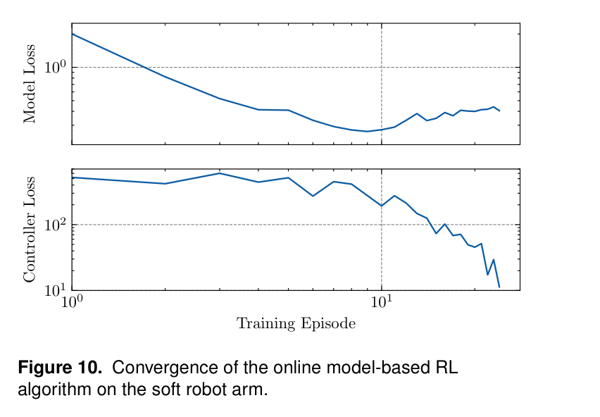
원문 Figure 10 · PDF p.12 — Figure 10. Convergence of the online model-based RL algorithm on the soft robot arm.
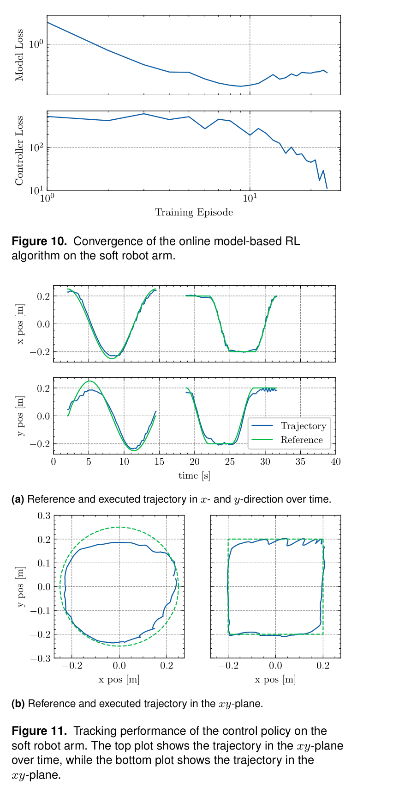
원문 Figure 11 · PDF p.12 — Figure 11. Tracking performance of the control policy on the soft robot arm. The top plot shows the trajectory in the xy-plane over time, while the bottom plot shows the trajectory in the xy-plane.
5.한계 및 향후 연구
현재 한계
regret 분석은 모델 학습과 정책 업데이트가 결합된 실제 비선형 신경망 과정 전체를 엄밀히 포괄하지 않는다.
주 검증 과제는 연속 궤적 추종이며 sparse reward, 접촉 전환, 충격이 있는 굴착 작업은 시험하지 않았다.
센서 outlier와 강한 노이즈가 model Jacobian 및 policy gradient에 미치는 내고장성은 충분히 다루지 않았다.
payload 변경 뒤 5 episode의 일시 성능 저하가 있으므로 안전-critical 운전에는 별도 보호 제어가 필요하다.
향후 연구
고차원 관측을 위한 latent dynamics와 perception encoder를 결합해 실제 굴착 상태를 다룬다.
기존 데이터의 pretraining과 expert demonstration을 이용해 초기 burn-in과 위험 탐색을 줄인다.
증가하는 mini-batch, robust loss, uncertainty를 도입해 noise·outlier·분포 급변에서 안정성을 높인다.
불연속 접촉과 sparse-reward 작업에서 이론 조건과 실기 성능을 확장 검증한다.
6.한마디로 정리
핵심 방법은?
실제 episode 손실을 모델 Jacobian으로 미분하고 제한된 전처리 update를 반복하며 동역학과 정책을 온라인 공동 학습한다.
핵심 결과는?
12.5 t 굴착기에서 180 episode·2.5시간 데이터로 평균 4.5 cm를 달성하고 payload 변화에 5 episode 안에 재적응했다.
한계는?
현재 결과는 연속 추종 중심이며 불연속 접촉, outlier, 초기 탐색 안전성과 완전한 결합 이론이 남는다.
이 방법은 정밀 grading 제어의 모델 식별을 작업 중 계속 수행하는 학습 계층으로 볼 수 있다. 고정 hydraulic calibration이 장기적으로 변할 때 실제 추종 오차에서 모델과 정책을 함께 보정해 장비별 수동 튜닝 부담을 낮춘다.
Boulder excavation이나 ExT의 고수준 skill policy에 직접 적용하려면 연속 valve tracking에서 contact-rich reward로 확장해야 한다. 그 전 단계로 각 skill이 내는 reference를 저수준 온라인 학습기가 추종하는 계층 구조가 가장 자연스럽다.
고수준 굴착 정책의 joint reference를 빠르게 추종하는 장비별 adaptive low-level controller로 연결할 수 있다.
센서리스 힘 추정값을 상태와 loss에 추가하면 payload·토양 저항 변화의 원인을 더 빨리 식별할 수 있다.
Holistic Fusion의 jump-free odometry와 결합하면 base motion이 있는 이동형 굴착기의 상태 분포 이동을 안정적으로 관측할 수 있다.
trust-region과 uncertainty 기반 safety filter를 결합해 payload 변화 직후의 일시 오차를 제한할 필요가 있다.
7.전체 그림·표
본문 핵심 위치에 배치하지 않은 원문 Figure와 Table을 원문 페이지 순서로 수록한다.
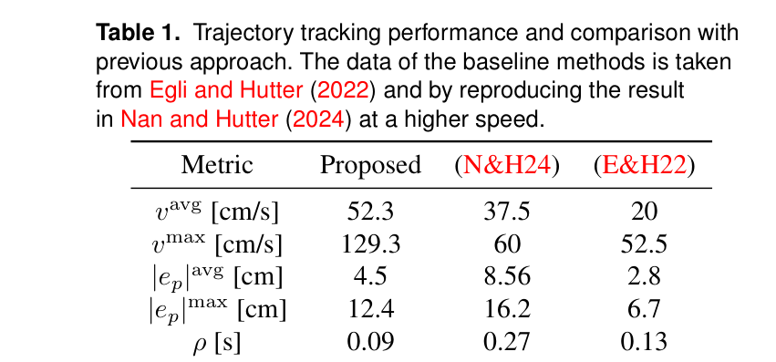
원문 Table 1 · PDF p.11 — Table 1. Trajectory tracking performance and comparison with previous approach. The data of the baseline methods is taken from Egli and Hutter (2022) and by reproducing the result in Nan and Hutter (2024) at a higher speed.
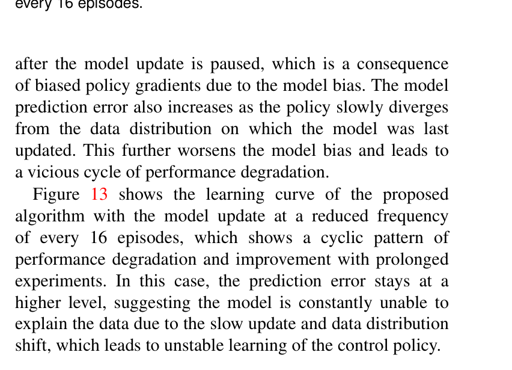
원문 Figure 13 · PDF p.13 — Figure 13 shows the learning curve of the proposed algorithm with the model update at a reduced frequency of every 16 episodes, which shows a cyclic pattern of performance degradation and improvement with prolonged experiments. In this case, the prediction error stays at a higher level, suggesting the model is constantly unable to explain the data due to the slow update and data distribution shift, which leads to unstable learning of the control policy.